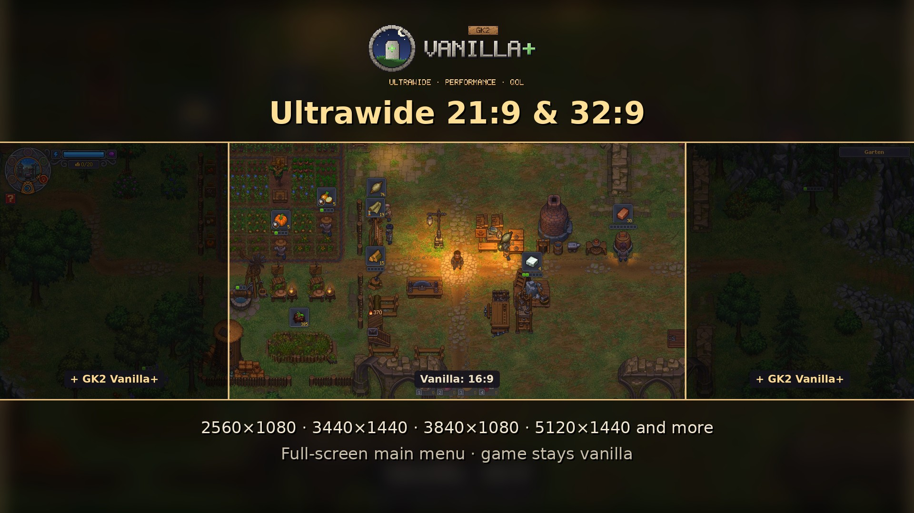
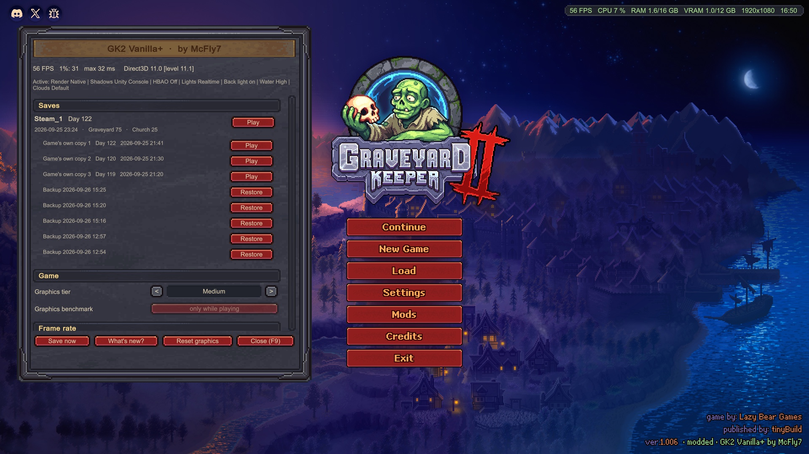
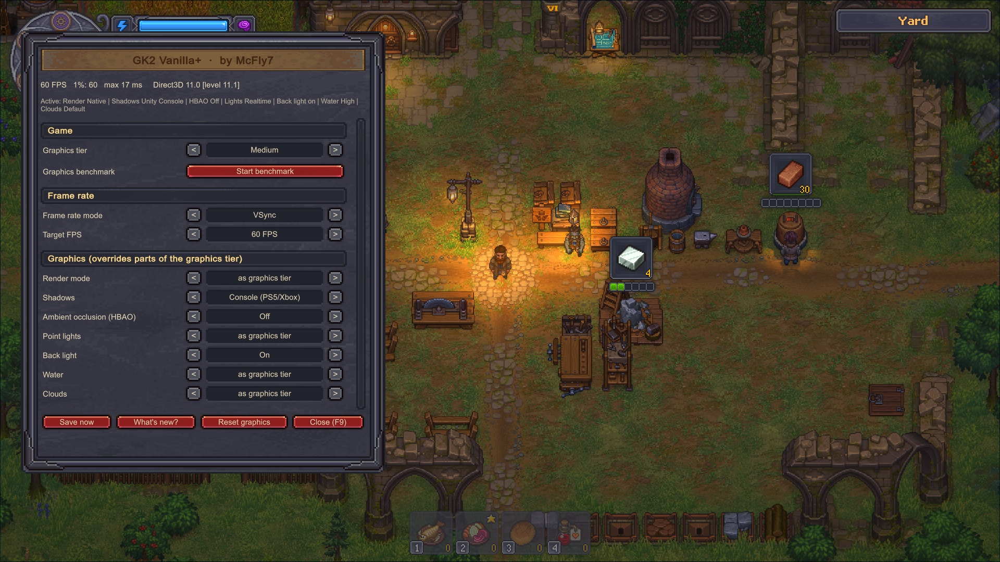
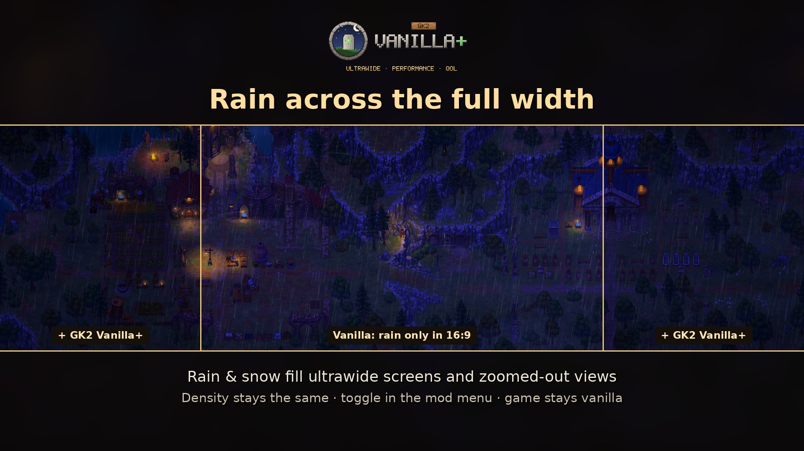
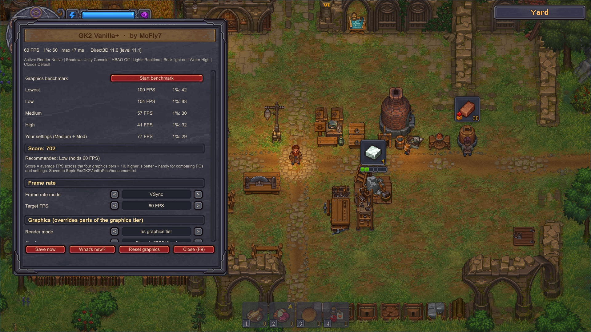
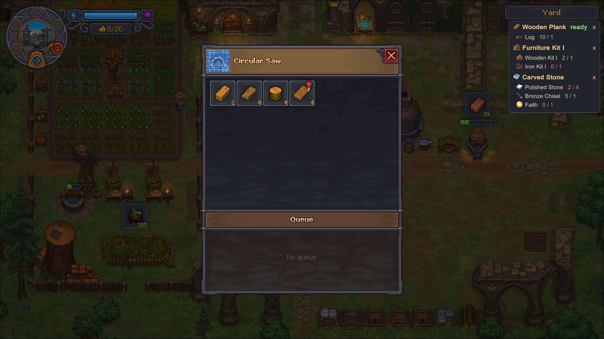
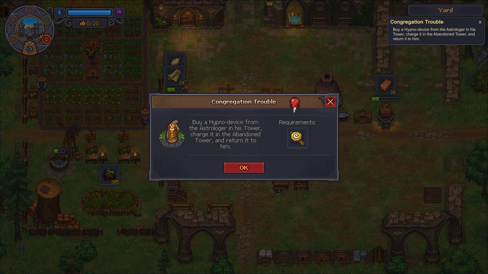
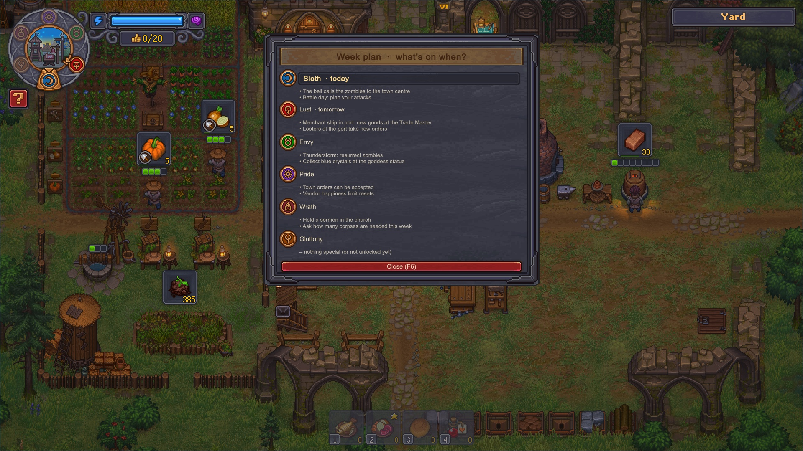
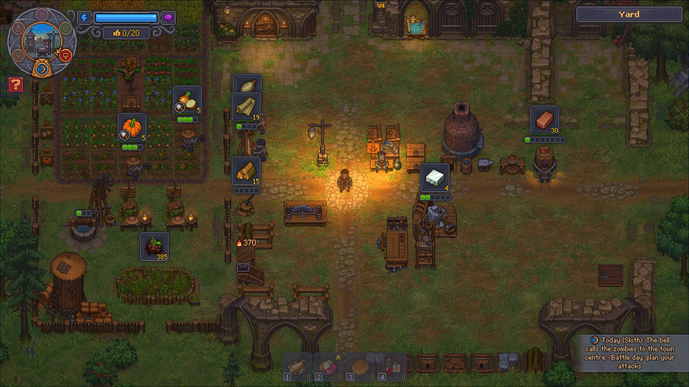
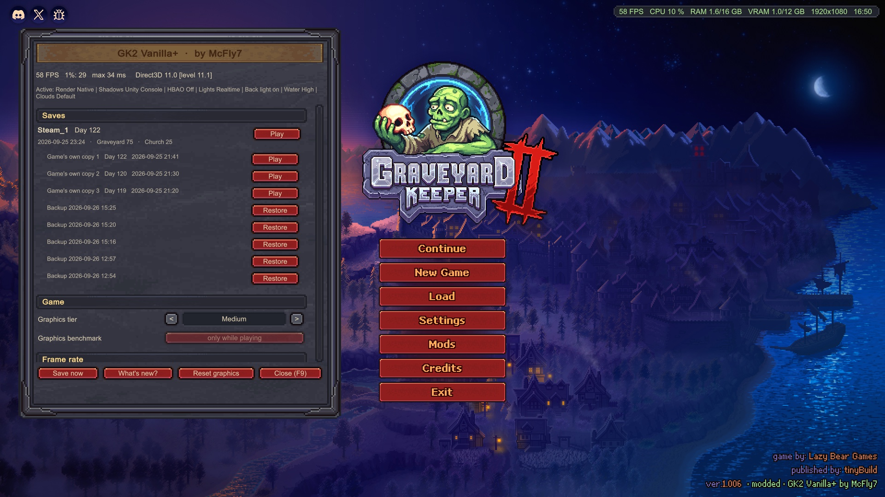

Titel und Kurzbeschreibung unten einfügen, Sprache English, Kategorie z. B. Modding / Settings, als Branding-Bild workshop/guide/GK2-VanillaPlus-Guide.png. Speichern.
Unter Images alle Bilder aus workshop/screenshots-1.4/ hochladen, die unten vorkommen.
Für jeden Abschnitt: Add section → Titel und Text einfügen → die angegebenen Bilder über „Add image“ an das Ende setzen.
Wenn alles steht: Sichtbarkeit auf Public. Danach den Link zum Guide in die Workshop-Beschreibung und die angepinnten Diskussionen setzen.
Grunddaten
Titel des Guides
Text80 Zeichen
Grunddaten
Kurzbeschreibung des Guides
Text240 Zeichen
Abschnitt 1
What this guide is
TitelWhat this guide is
Text1109 Zeichen
Bilder (vorher unter „Bilder“ hochladen, dann im Abschnitt einfügen)

01_ultrawide.jpg
Abschnitt 2
Step 1 – Install (Windows)
TitelStep 1 – Install (Windows)
Text1332 Zeichen
Bilder (vorher unter „Bilder“ hochladen, dann im Abschnitt einfügen)

02_mods_button.jpg
Abschnitt 3
Step 1 – Install (Steam Deck / Linux, Mac)
TitelStep 1 – Install (Steam Deck / Linux, Mac)
Text1172 Zeichen
Abschnitt 4
The mod menu (F9)
TitelThe mod menu (F9)
Text798 Zeichen
Bilder (vorher unter „Bilder“ hochladen, dann im Abschnitt einfügen)

03_performance_menu.jpg
Abschnitt 5
Ultrawide – no more black bars
TitelUltrawide – no more black bars
Text712 Zeichen
Bilder (vorher unter „Bilder“ hochladen, dann im Abschnitt einfügen)

15_full_width_rain.jpg
Abschnitt 6
More FPS – for weak PCs, laptops and the Steam Deck
TitelMore FPS – for weak PCs, laptops and the Steam Deck
Text728 Zeichen
Bilder (vorher unter „Bilder“ hochladen, dann im Abschnitt einfügen)

04_graphics_benchmark.jpg
Abschnitt 7
Pinning – what to bring with you
TitelPinning – what to bring with you
Text792 Zeichen
Bilder (vorher unter „Bilder“ hochladen, dann im Abschnitt einfügen)

05_pin_recipes.jpg

12_pin_quests.jpg
Abschnitt 8
Week plan and daily reminder
TitelWeek plan and daily reminder
Text371 Zeichen
Bilder (vorher unter „Bilder“ hochladen, dann im Abschnitt einfügen)

06_week_plan.jpg

07_daily_reminder.jpg
Abschnitt 9
Saves and backups
TitelSaves and backups
Text704 Zeichen
Bilder (vorher unter „Bilder“ hochladen, dann im Abschnitt einfügen)

09_saves_backups.jpg
Abschnitt 10
FPS display, camera and screenshots
TitelFPS display, camera and screenshots
Text691 Zeichen
Bilder (vorher unter „Bilder“ hochladen, dann im Abschnitt einfügen)